At Wipro, "Everyone belongs". By nurturing a workplace where every individual can be their authentic self and
feel a deep sense of belonging, we cultivate an environment where everyone thrives in a merit-driven,
high-performance culture.
With a workforce of 230,000+ associates representing 146 nationalities across 65 countries, our commitment
to seeking and integrating the best talent is deeply rooted in our 80-year legacy and guided by the core
values set in our Code of Business Conduct, the Spirit of Wipro, and the Five Habits, ensuring that
Wipro
reflects the societies in which it operates and celebrates the rich diversity of our voices.
We believe in meritocracy and do not engage in or support discrimination in any aspect of employment based
on ethnic and national origin, race, caste, religion, disability, age, gender, creed, marital status,
gender
identity, gender expression, sexual orientation, political orientation, protected veteran status, or any
other characteristic protected by law.
Inclusion
Through unwavering commitment to gender equality, LGBTQIA+ inclusion, accessibility for all
abilities,
racial harmony, intergenerational collaboration, and a diverse supplier network, we forge a path
towards
a truly inclusive workplace where everyone feels welcome and empowered to bring their authentic
selves.
Belonging
We believe in creating a more connected workforce, where every individual feels integral to our
success,
is genuinely seen and valued, and is empowered to share their talents and authentic selves
within their
work communities.
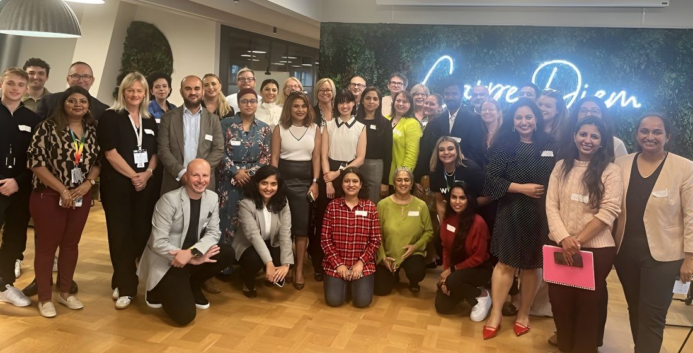
Inclusion in Action: Building a Culture of Belonging
Annual Inclusion and Belonging Report 2024-25: This report highlights our commitment and progress
to
advance inclusion and belonging at Wipro.
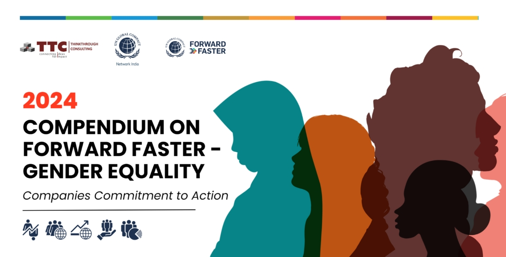
Women Inclusion Programs featured by UNGC Network India
Wipro’s commitment to advancing gender equality featured in the United Nations Global Compact
Network
India’s ‘Case Study Compendium.
Exploring Inclusion and Belonging in Workplaces
Sunita Cherian, Chief Culture Officer, Wipro shares her perspective in Indeed's latest Diversity,
Inclusion and Belonging (DI&B) study. Click here for more details.
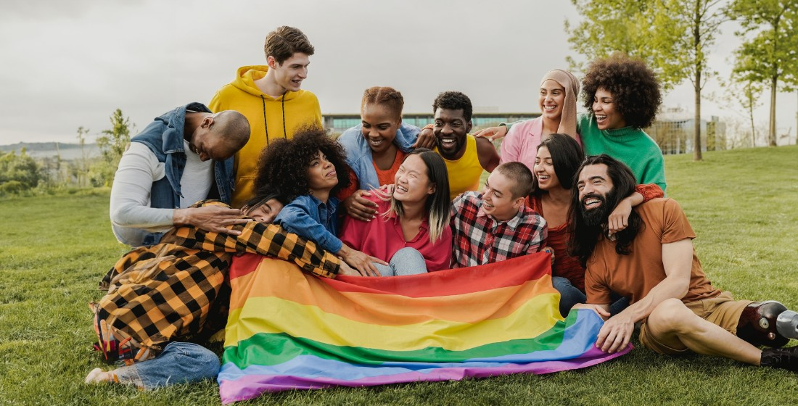
We are proud to join the Business Coalition for the US Equality
More than 530 major companies across the country that are working to pass the Equality Act to
ensure
comprehensive protections for LGBTQIA+ people nationwide.
OUR POLICIES AFFIRM OUR COMMITMENT TO INCLUSION AND BELONGING IN THE WORKPLACE
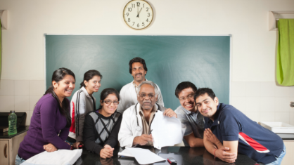
Global Inclusion & Belomging Policy
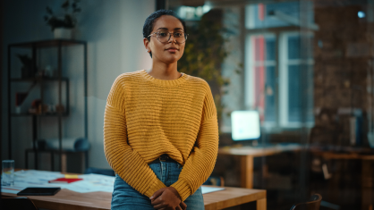
Global Prevention of LGBTQOIA+ Discrimination Policy
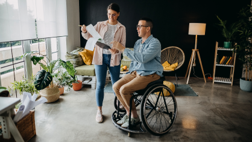
Equal Employment Opprotunity Policy
CREATING A SAFE SPACE THROUGH OUR AFFINITY GROUPS/ERGs
Wipro believes that a multi-pronged approach to Inclusion and Belonging is the best way to inspire
societal change that lasts. To that end, we are deeply involved with the following employee communities
Wow Mom
Wow mom is program that eaims to support enable and engada with wimmen
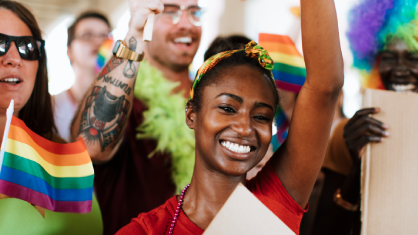
Wipro Pride
our global LGBTQUI+ employee resource Groups
Disability Allience Network
The DAN aims brings to disable voice
WIPRO HAS BEEN GLOBALLY RECOGNIZED BY LEADING ORGANIZATIONS AROUND THE WORLD FOR ITS PASSIONATE
COMMITMENT
TO INCLUSION AND BELONGING
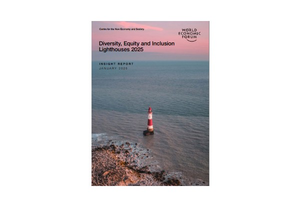
Featured as a DEI Lighthouse 2025 by World Economic Forum
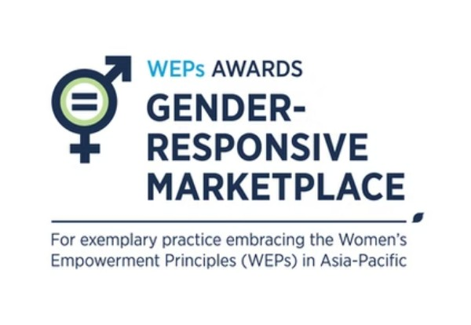
Winner of Excellence Award in World 50 Impact Awards 2025
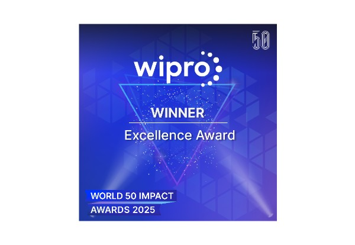
Winner of Gold Award in three categories of Brandon Hall Excellence Awards 2024
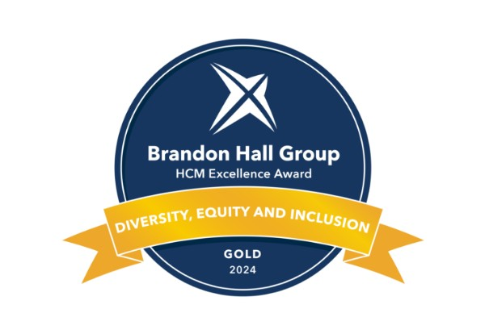
Featured as a DEI Lighthouse 2025 by World Economic Forum
Winner of Excellence Award in World 50 Impact Awards 2025
Winner of Gold Award in three categories of Brandon Hall Excellence Awards 2024
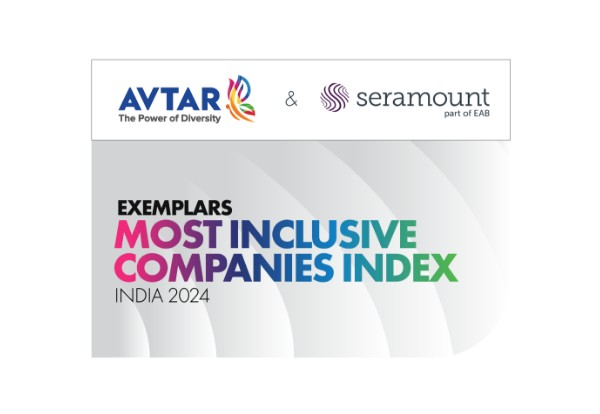
Featured as a DEI Lighthouse 2025 by World Economic Forum
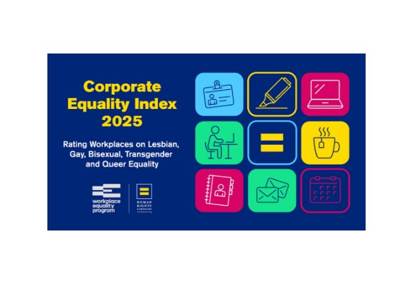
Winner of Excellence Award in World 50 Impact Awards 2025
Winner of Gold Award in three categories of Brandon Hall Excellence Awards 2024